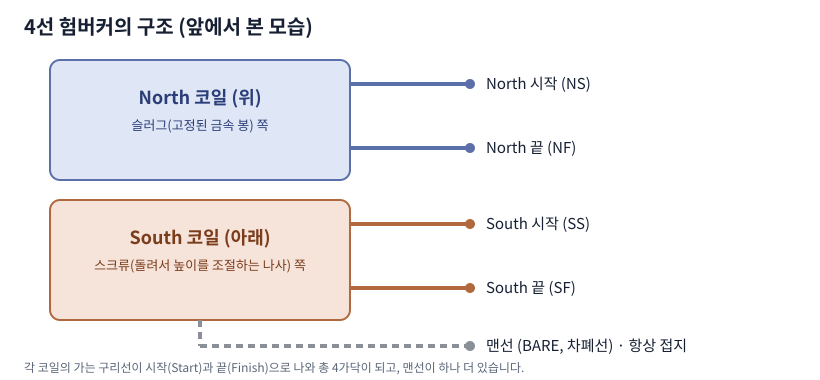

험버커 픽업 선 색상 비교 (Seymour Duncan·DiMarzio·Gibson)
같은 4선 험버커라도 제조사마다 선 색이 다릅니다. 색 대신 "North 시작·끝, South 시작·끝"이라는 역할로 이해하면 어떤 제품이든 같은 배선도를 적용할 수 있습니다.
먼저 알아둘 구조

앞에서 봤을 때 아래쪽이 South(스크류 쪽), 위쪽이 North(슬러그 쪽) 코일입니다. 각 코일의 가는 구리선이 시작(Start)과 끝(Finish)으로 나와 4가닥이 되고, 차폐용 맨선이 추가로 있어 총 5가닥입니다. 맨선은 항상 접지에 연결합니다.
제조사별 선 색상 비교
| 제조사 | North 시작 | North 끝 | South 시작 | South 끝 | 직렬 연결부 |
|---|---|---|---|---|---|
| Seymour Duncan | 검정 (핫) | 흰색 | 초록 (접지) | 빨강 | 흰색 + 빨강 |
| DiMarzio | 빨강 (핫) | 검정 | 초록 (접지) | 흰색 | 검정 + 흰색 |
| Gibson / Epiphone (4선) | 빨강 (핫) | 흰색 | 검정 (접지) | 초록 | 흰색 + 초록 |
표에서 직렬 연결부는 North 끝과 South 끝을 서로 납땜해 절연테이프로 감는 두 선을 뜻합니다. 같은 색 이름이라도 제조사마다 가리키는 역할이 다릅니다. 예를 들어 빨강은 Seymour Duncan에서는 South 끝이지만 DiMarzio와 Gibson에서는 North 시작(핫)입니다.
Fender 싱글코일은 다릅니다
싱글코일은 선이 2가닥뿐이고 규칙이 제조사·모델·연식마다 다릅니다. 빈티지 스타일 Fender 계열 픽업은 일반적으로 흰색이 핫, 검정이 접지이지만, Fender 자체도 모델과 연식에 따라 색 체계가 다르기 때문에 반드시 해당 제품의 설명서로 확인해야 합니다.
선 색을 모를 때 확인하는 법
- 제조사 홈페이지의 배선도가 가장 정확합니다. 모델명으로 찾아보세요.
- 멀티미터로 저항을 재면 같은 코일의 시작·끝 선을 구분할 수 있습니다. 같은 코일의 두 선 사이에서만 저항값이 나옵니다.
- 2선 방식의 오래된 험버커는 안쪽 선이 핫, 바깥 차폐망이 접지인 경우가 많습니다.
제조사 공식 배선도
브랜드별 직렬·병렬·코일 스플릿 배선도는 아래 글에서 확인할 수 있습니다.
이 글은 일반적인 정보 제공 목적이며 모든 제품과 연식에 맞는 것은 아닙니다. 납땜 작업은 인두 화상과 환기에 주의하고, 선 색이 확실하지 않으면 멀티미터로 확인하거나 전문 수리점에 맡기세요. 작업 중 발생한 손상에 대한 책임은 작업자에게 있습니다.